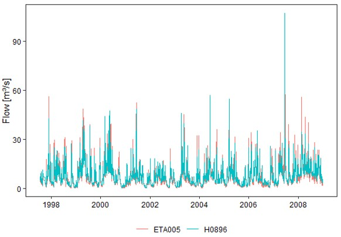
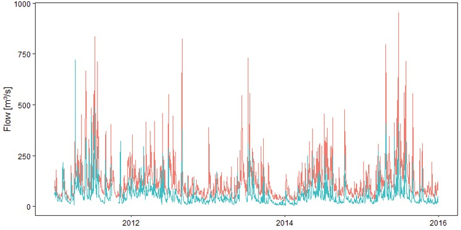
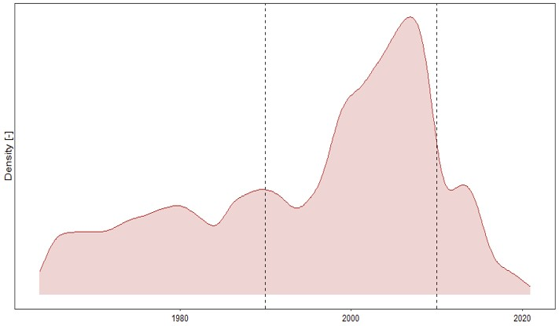
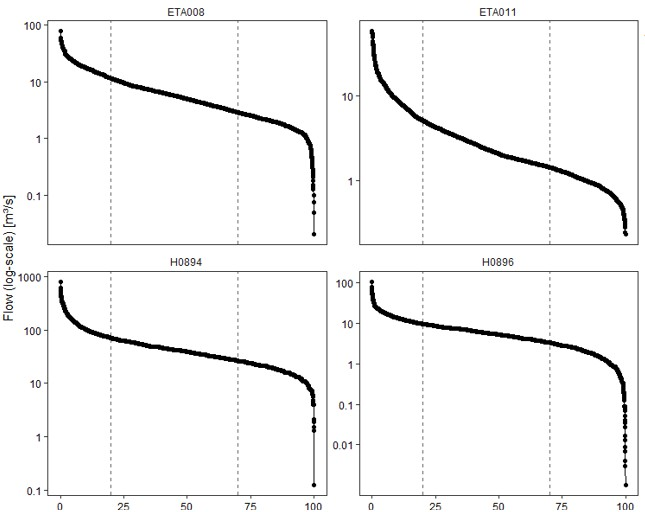
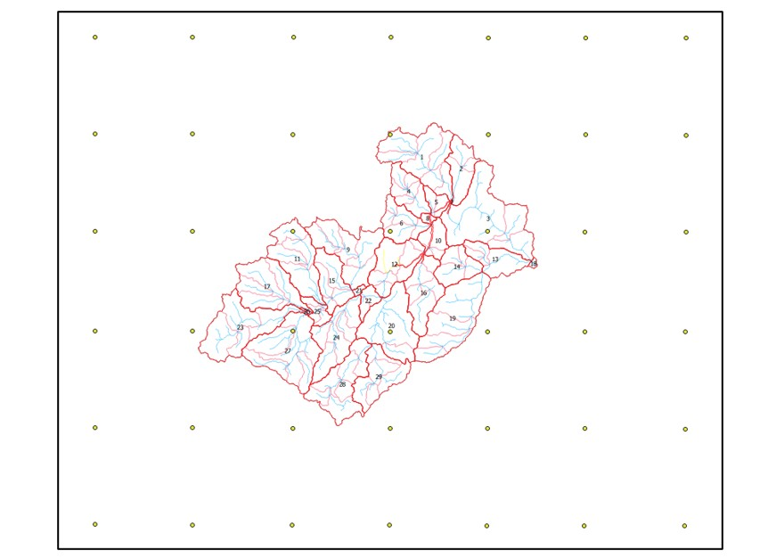
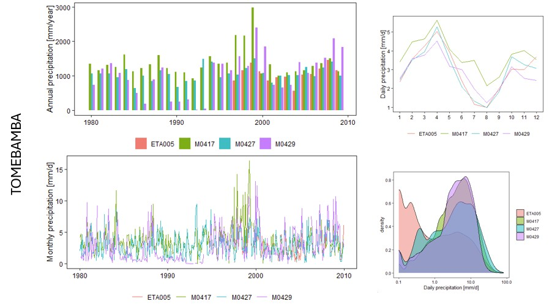
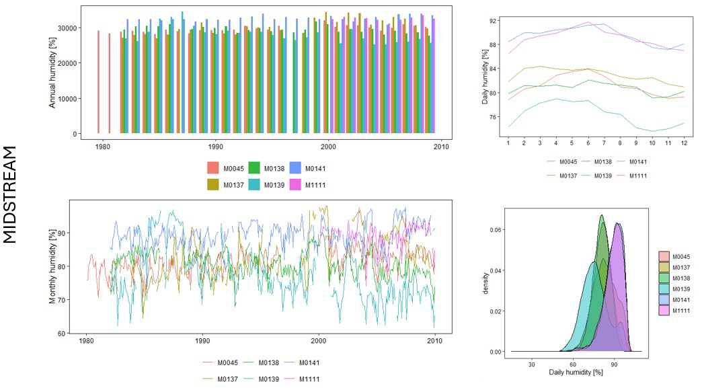
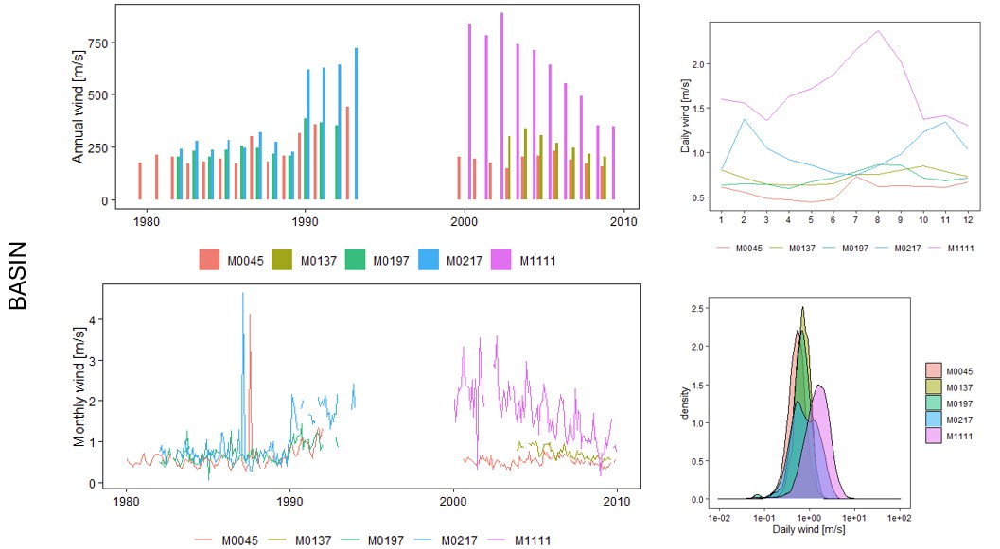
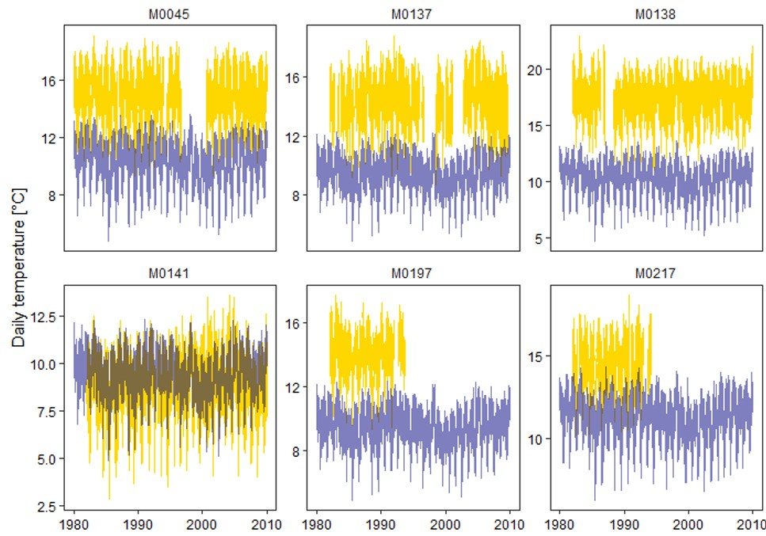
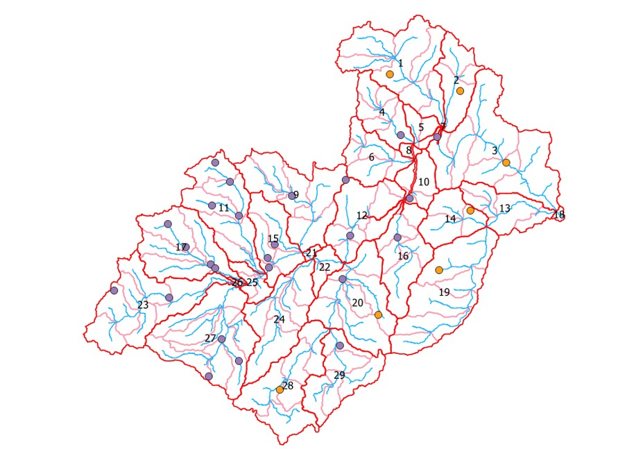

Data preparation
After completing the delineation of the watershed and the associated hydrological response units (HRUs), we have come to the point of selecting and preparing the available meteorological data. With this data, we will be able to (1) define the long-term climate within the watershed and (2) use actual time series of meteorological conditions in specific locations that will steer the hydrological behaviour of the watershed. Keeping this in mind, our first step is determining what kind of data we actually need and where we can find it, followed by bringing all this data together and cleaning it up to a level that is acceptable for our project. While this sounds simple, it will easily take up most of the time, so let's get started!
We start with identifying the necessary data. While SWAT+ actually does not need any external data to develop a hydrological model, it is desirable to have some flow data available for model calibration. This type of data is typically derived from water level readings and point-specific discharge curves that link overall flow with the water level. Ideally, this flow data has a daily resolution that can additionally be used to derive monthly conditions. For the Paute watershed, we collected several time series of (derived) river flow for a variety of stations throughout the basin from INAMHI, ETAPA, and CELEC.
In addition to (daily) flow data, precipitation data greatly contributes to the calibration of the hydrological model as it is one of the main steering factors of river flow. Even more so, also relative humidity, air temperature, wind speed, and solar radiation play a role in the associated relevant (atmospheric) processes. As a result, we prefer to have (daily) time series of these variables available to accurately simulate the meteorological conditions within the basin. For the Paute watershed, we collected several time series of all five meteorological variables for a variety of stations throughout the basin from INAMHI and ETAPA. But, these data sets are also characterized by high levels of missing data...
Data sources
Overlapping stations

Stations without coordinates

Flow data
Data selection

Data cleaning

Meteorological data
Weather generator

While this grid has been developed by the weather generator, we can replace it completely with our own weather stations. To do so, it is good to be aware of the information that we have to provide to each of these stations to support the functioning of the underlying climate model and the generation of realistic weather conditions throughout the basin. These are all the included meteorological parameters:
- Average daily maximum air temperature (°C)
- Average daily minimum air temperature (°C)
- Standard deviation for daily maximum air temperature (°C)
- Standard deviation for daily minimum air temperature (°C)
- Average total month precipitation (mm)
- Standard deviation of daily precipitation (mm/d)
- Skewness coefficient of daily rainfall within a month (mm)
- Probability of a wet day after (1) a wet day and (2) a dry day (-)
- Average number of precipitation days per month (-)
- Maximum half-hourly rainfall per month (mm)
- Average daily solar radiation (MJ/m²/d)
- Average daily dewpoint temperature (°C) OR average daily humidity (-)
- Average wind speed (m/s)
This overview also allows to identify which parameters can be updated based on observed data (ETAPA, INAMHI, …) and which ones require an alternative solution. This can include the use of climate data in the nearest station created by the weather generator, as well as the use of satellite data. Based on this list of 13 parameters, we can already conclude that the following parameters cannot be calculated with the available observed data:
- Statistics for temperature, as only daily averages are available
- Maximum half-hourly rainfall per month, as only daily totals are available
- Statistics for solar radiation, as only daily hours of sunshine are available
Weather data
Observed weather data works in cooperation with the weather generator to derive viable weather conditions throughout the basin. Various weather stations can be identified that have time series of a set of meteorological variables, in which data can be missing (though replaced by the value -99, which indicates that it has to be simulated) and a whole time series can be absent (a 'virtual' station to avoid selection of the closest weather station). More information on these empty data series will be provided later on. The cooperation with the weather generator relies on the inclusion of the following five variables:
- Precipitation (table 'pcp', includes the total daily rainfall in mm)
- Temperature (table 'tmp', includes minimum and maximum of the day in °C)
- Solar radiation (table 'slr', includes average radiation in MJ/m²/d)
- Humidity (table 'hmd', includes average daily humidity as a fraction)
- Wind (table 'wnd', includes average daily wind speed in m/s)
This overview also allows to identify which parameters can be updated based on observed data (ETAPA, INAMHI, …) and which ones require an alternative solution. This can include the use of climate data in the nearest station created by the weather generator, as well as the use of satellite data. Based on this list of 5 parameters, we can already conclude that the following parameters cannot be calculated with the available observed data:
- Temperature, as only daily averages are available
- Solar radiation, as only daily hours of sunshine are available
Observed data
Based on the assessment of the previous two sections, the following variables are selected for further analysis of the external data (ETAPA, INAMHI, …): (1) Precipitation, (2) Humidity, and (3) Wind speed. Similar to the external flow data, we start by retaining only those stations with at least 5 years of daily precipitation data within the calibration-validation period (01/01/1990-31/12/2009). These are the stations that we will be using for all meteorological variables (even when no observed data is available). After this selection of which stations to consider, we continue with subsetting the available time series to cover the time period 01/01/1980 up to 31/12/2009. This period covers a 10-year warming period for the SWAT+ model, a 15-year calibration period, and a 5-year validation period. Moreover, by covering 30 years of weather data, it provides a solid basis to derive month-specific weather statistics for the weather generator. We will tackle each considered variable in more detail in the following paragraphs.



As time series of both relative humidity and wind speed display a limited spatial coverage, we are faced with the challenge to find monthly climate statistics for both variables in the stations withouth any observed time series. Here, we can opt to (1) copy the baseline weather generator monthly values for these variables from the closest station or (2) copy the monthly statistics of the closest field station. To support our decision, we can implement a comparison of the field data with the closest weather generator station. For now, we will use the closest field station to fill our database with monthly statistics (which also reduces our dependence on the built-in weather generator). The daily time series will remain empty, though.
Satellite data
Based on the assessment of the first two subsections, the following variables are selected for further analysis of the satellite data (CDS ERA5, starting from 1940): (1) Temperature and (2) Radiation. We will do this for all stations with sufficient precipitation data (see previous section).

In contrast to temperature, we do not have extensive time series of solar radiation to apply a similar approach. Still, we can look at satellite-based data to provide some kind of input for our hydrological model, for which we can perform a sensitivity analysis at a later stage. For now, we choose the data series “Mean surface downward short-wave radiation flux” that “comprises both direct and diffuse solar radiation”. We will use this data as actual time series for all the selected stations, as well as for deriving their monthly statistics.
Tuning of weather generator parameters
The abovementioned steps allow to calculate the necessary statistics to be used by the weather generator as a means to generate rainfall (and evaporation) patterns that underly the creation of flow through the basin. More specifically, precipitation statistics are obtained from observed data (and a little help from satellite data for the maximum half-hourly rainfall), humidity and wind speed statistics are obtained from observed data and copied to stations without data, and temperature and solar radiation statistics are obtained from satellite data (after correction via ground-truthing). While this might seem straightforward, we have to keep in mind that the smallest change to the baseline data (e.g., an extra station, more recent data, ...) requires a complete update of the associated statistics. As it is possible that some statistics might be missed when doing so manually, we will opt for a completely automatic approach through an R script that can recalculate all statistics directly and simultaneously generate a data file that can be imported into the SWAT+Editor without changing anything.
Additional stations

This section marks the end of the data preparation for model development, thus we can continue with the development of the actual hydrological model. More information related to this can be found on the page related to Model calibration.